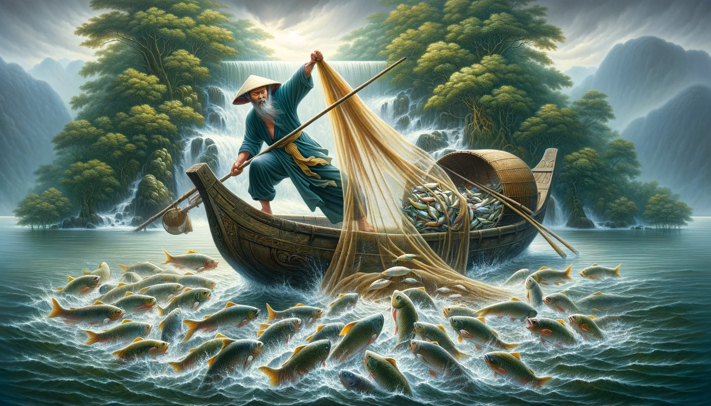

Chương 2: Giấc Mơ Kì Lạ
Phạm Hữu Thế bất ngờ giật mình tỉnh dậy giữa đêm khuya, mồ hôi đẫm ướt trán. Cậu ngồi bật dậy, nhìn quanh căn phòng tối om, cố gắng nhận ra mình đang ở đâu. Những hình ảnh của cuộc triều hội trên thiên đình vẫn lẩn khuất trong tâm trí, nhưng rồi cậu nhận ra, tất cả chỉ là một giấc mơ.
Cậu hít thở sâu để bình tĩnh lại. Nhìn qua cửa sổ, ánh trăng mờ ảo rọi xuống làng Hạ Bì, nơi cậu đã sinh ra và lớn lên. Thế thầm nghĩ: "Chỉ là một giấc mơ thôi sao? Sao lại chân thật đến vậy?". Hạ Bì là một ngôi làng nhỏ nằm bên bờ sông, được bao quanh bởi những cánh đồng lúa mênh mông và những dãy núi trùng điệp. Ngôi làng yên bình, người dân sống chủ yếu bằng nghề nông và đánh cá. Cảnh vật thanh bình và con người hiền hậu nơi đây làm cho Thế cảm thấy an tâm và gần gũi.
Cha mẹ của Hữu Thế là những người nông dân chăm chỉ. Cha cậu, ông Phạm Văn Đạt, là một thợ rèn tài ba, nổi tiếng khắp vùng vì những công cụ nông nghiệp ông làm ra đều chắc chắn và bền bỉ. Ông Đạt có vóc dáng lực lưỡng, làn da rám nắng, đôi tay chai sần vì năm tháng lao động. Mỗi khi ông cười, nụ cười của ông hiền hậu nhưng không giấu được nét kiên cường của một người đã trải qua nhiều khó khăn. Mẹ cậu, bà Nguyễn Thị Mai, là một người phụ nữ hiền hậu, đảm đang, luôn chăm sóc gia đình bằng tất cả tình thương yêu. Bà Mai có dáng người nhỏ nhắn, đôi mắt dịu dàng, luôn tỏa ra vẻ ấm áp và nhân hậu. Mỗi buổi sáng, mẹ Thế thường ra đồng từ rất sớm, làm việc cặm cụi dưới ánh nắng ban mai, còn cha cậu luôn bận rộn với tiếng búa vang vọng trong xưởng rèn. Thế thường giúp đỡ cha mẹ mỗi khi rảnh rỗi, từ việc ra đồng, đến việc giúp cha rèn những chiếc lưỡi cày, lưỡi liềm.
Một buổi sáng, Thế thức dậy và chuẩn bị đi chơi. Cậu bước vào xưởng rèn, nơi cha đang làm việc. Tiếng búa đập vào sắt thép vang lên, hòa quyện với tiếng chim hót ngoài vườn, tạo nên một khung cảnh lao động đầy sinh động. Thế lên tiếng: "Cha ơi, con đi chơi với Minh được không? Con sẽ về sớm thôi."
Ông Đạt ngừng tay, nhìn con trai với ánh mắt trìu mến: "Đi chơi thì đi, nhưng nhớ về sớm, đừng để mẹ con lo."
Thế vui vẻ đáp: "Dạ, con biết rồi cha!"
Thế có một người bạn thân tên Lê Văn Minh, cùng lớn lên và chia sẻ mọi buồn vui trong cuộc sống. Minh là con trai của ông bà Lê Văn Hưng, một gia đình làm nghề chài lưới lâu đời ở Hạ Bì. Minh có dáng người cao lớn, khuôn mặt sáng sủa với nụ cười luôn rạng rỡ. Minh luôn giúp đỡ Thế mỗi khi cậu cần, và cả hai cùng nhau vui đùa bên dòng sông và mảnh đất quê hương. Ông Hưng, cha của Minh, là một người đàn ông có thân hình vạm vỡ, da ngăm đen vì nắng gió, đôi mắt sắc sảo nhưng luôn ánh lên vẻ hài hước. Mặc dù vẻ ngoài có phần đáng sợ, nhưng ông Hưng lại là người vui vẻ, thích trêu đùa mọi người, khiến ai cũng quý mến.
Một buổi sáng nọ, Thế và Minh cùng nhau ra bờ sông chơi. Cả hai tìm một chỗ đất mềm cạnh bờ sông để ngồi. Cỏ xanh mướt mọc dày, êm ái như những chiếc gối tự nhiên, khiến cho chỗ ngồi thật thoải mái. Đất ẩm và mát, mùi hương của phù sa và cây cỏ hòa quyện trong không khí. Thế nhìn xung quanh, thấy những chiếc lá non rơi xuống mặt đất, tạo nên một khung cảnh yên bình và thư thái. Tiếng suối róc rách chảy qua các khúc quanh, tạo nên một bản nhạc thiên nhiên dịu dàng.
Minh bắt đầu cuộc trò chuyện: "Thế, hôm qua mày mơ thấy gì mà la hét dữ vậy? Tao còn nghe cả tiếng từ nhà mày."
Thế cười ngượng: "Ừ, tao mơ thấy mình được lên thiên đình gặp các vị thần. Nhưng mà tỉnh dậy mới biết chỉ là giấc mơ thôi."
Minh trêu: "Mày lúc nào cũng mơ mộng. Nhưng mà mơ gặp thần chắc là điềm tốt đấy."
Thế ngẫm nghĩ rồi hỏi lại: "Minh, mày có bao giờ nghĩ rằng giấc mơ của mình có thể thành sự thật không?"
Minh cười phá lên: "Nếu giấc mơ của tao thành sự thật, chắc tao đã trở thành vua rồi, vì tao mơ thấy mình ngồi trên ngai vàng suốt."
Cả hai cười đùa vui vẻ. Minh ngả người nằm xuống thảm cỏ mềm mại, đôi mắt nhìn lên bầu trời xanh thẳm. Thế cũng nằm xuống bên cạnh, cảm nhận sự mát lạnh của đất và cỏ dưới lưng. Họ nói chuyện về đủ thứ, từ những trò đùa tinh nghịch ở làng đến những ước mơ tương lai.
Minh hỏi: "Thế, mày có bao giờ nghĩ đến việc rời làng đi tìm cuộc sống mới không? Tao nghe nói ở kinh thành có nhiều cơ hội lắm."
Thế trầm ngâm: "Tao cũng từng nghĩ đến, nhưng mà tao yêu làng mình lắm. Ở đây yên bình, ai cũng thân thiện. Tao không muốn rời xa nơi này."
Minh gật đầu: "Ừ, tao hiểu. Nhưng mà biết đâu một ngày nào đó, chúng ta sẽ có cơ hội khám phá thế giới bên ngoài. Chỉ cần chúng ta luôn tin tưởng và nỗ lực, đúng không?"
Thế mỉm cười: "Đúng vậy, Minh. Chúng ta còn trẻ, còn nhiều thời gian để mơ ước và thực hiện."
Trong lúc họ trò chuyện, Thế bất chợt cảm thấy có một cảm giác kỳ lạ. Cậu im lặng, nhìn chăm chú vào dòng sông. Mặt nước lấp lánh dưới ánh nắng ban mai, nhẹ nhàng chảy qua những khúc quanh. Đột nhiên, Thế nhìn thấy một đàn cá lớn đang bơi lội cách đó không xa. Cảm giác này giống như một luồng năng lượng nào đó kết nối giữa cậu và dòng sông. Thế lập tức gọi Minh và bảo: "Minh, chạy nhanh về nhà gọi ông Hưng ra đây. Có đàn cá lớn ở chỗ kia kìa, nhanh lên!"
Minh ngạc nhiên nhìn Thế, nhưng rồi cũng vội vàng chạy về nhà. Trên đường chạy, Minh vừa chạy vừa nghĩ về lời Thế nói. Khi Minh về đến nhà, cậu thở hổn hển và gọi lớn: "Cha ơi! Cha mau ra bờ sông đi, Thế thấy có đàn cá lớn lắm!"
Ông Hưng nghe vậy, cười ha hả: "Thằng Thế lại bày trò gì nữa đây! Nhưng cứ thử xem sao, biết đâu lại có mẻ cá lớn."
Khi ông Hưng mang lưới ra và thả lưới đúng chỗ Thế chỉ, kết quả là một mẻ cá lớn đến nỗi ông tưởng như kéo hết cả cá của dòng sông Hạ Bì này lên, khiến ông rất vui mừng. Ông Hưng nhìn Thế với ánh mắt ngạc nhiên và khen ngợi: "Mắt mày tinh lắm đấy, Thế! Đêm nay ông đãi làng một bữa cá nướng, mày gọi làng họp lại ăn cho ông vui."
Cả làng Hạ Bì không giấu nổi niềm vui sướng. Đàn cá không chỉ giúp gia đình ông Hưng mà còn là một niềm vui chung của cả làng. Mọi người cùng nhau chia sẻ những con cá tươi ngon, chuẩn bị cho một bữa tiệc mừng vào buổi tối. Chiều tối, khi ánh hoàng hôn dần buông xuống, ngôi làng nhỏ bắt đầu nhộn nhịp hơn. Những nhà đèn lồng được thắp sáng rực rỡ, tiếng cười nói vang lên khắp nơi. Bầu không khí tươi vui lan tỏa, mọi người ai nấy đều rạng rỡ, hớn hở chuẩn bị cho buổi hội làng.
Người lớn trong làng bắt đầu chuẩn bị từ sớm, các bà các mẹ tất bật với những món ăn truyền thống, nào là cá nướng, trái cây và rượu. Những con cá được chế biến cẩn thận, nướng trên những bếp than đỏ lửa, mùi thơm phức lan tỏa khắp nơi. Những chiếc đèn lồng thủ công, được trẻ con và người lớn cùng nhau làm từ trước, giờ đây treo lên khắp làng, ánh sáng ấm áp, lung linh tạo nên một không gian huyền ảo.
Các trò chơi dân gian cũng được tổ chức để tạo niềm vui cho mọi người. Trò kéo co diễn ra sôi nổi, những người đàn ông lực lưỡng chia thành hai đội, cố gắng kéo dây về phía mình. Tiếng hò reo cổ vũ vang dội, ai nấy đều hào hứng. Trẻ con thì thích thú với trò chơi ô ăn quan, nhảy dây, rồng rắn lên mây. Những tiếng cười giòn tan vang lên khắp nơi.
Tại sân đình làng, mọi người tụ tập đông đủ. Bà Mai mỉm cười nhìn con trai và nói với mọi người xung quanh: "Thằng Thế nhà tôi hôm nay làm được việc lớn rồi, giúp cả làng có bữa tiệc vui thế này."
Ông Đạt cũng gật đầu khen ngợi: "Phải đấy, nó giỏi lắm, không biết học đâu ra cái tài nhìn cá như thế."
Bữa tiệc được tổ chức ở sân đình làng, mọi người cùng nhau quây quần, nướng cá, ca hát và nhảy múa. Mùi cá nướng thơm lừng lan tỏa khắp nơi, hòa quyện với mùi hương của cỏ cây và hương trầm thắp lên từ các bàn thờ trong đình. Thế và Minh cùng bọn trẻ con trong xóm vui đùa quanh đống lửa lớn giữa làng. Tiếng cười nói rộn ràng không ngớt. Một người lớn cười lớn nói: "Mấy đứa nhỏ này, làm việc thì không thấy đâu, mà chơi thì khỏe như trâu vậy."
Người khác đáp lại: "Chúng nó còn trẻ, để chúng vui đùa, lớn lên sẽ có sức làm việc cho làng."
Tiếng đàn hát rộn ràng vang lên, hòa vào bầu không khí nhộn nhịp. Ông Hưng đứng giữa đám đông, kể chuyện cười làm ai nấy đều cười ngả nghiêng. Ông kể về những ngày xưa khó khăn, về những lần đi chài lưới gặp bão, nhưng qua đó cũng thể hiện tinh thần lạc quan, vui vẻ của ông. Mọi người cùng nhau nhắc lại những kỷ niệm xưa cũ, những ngày tháng khó khăn nhưng đầy ắp tình yêu thương.
Một người phụ nữ đứng bên cạnh bà Mai nói: "Chị Mai này, thằng Thế nhà chị giỏi thật đấy. Cả làng nhờ nó mà có bữa tiệc vui thế này."
Bà Mai cười đáp: "Chúng nó còn nhỏ, hay nói bừa mà may mắn có đàn cá ở đó thôi."
Trong khi mọi người đang vui vẻ, Thế và Minh ngồi bên nhau, ánh lửa bập bùng soi rõ khuôn mặt rạng rỡ của hai cậu bé. Thế nhìn quanh, ngắm nhìn không gian xung quanh và cảm nhận lòng mình tràn đầy niềm vui và hạnh phúc. Minh quay sang Thế, nở nụ cười: "Thế, hôm nay mày đúng là anh hùng của làng đấy. Cảm giác thế nào?"
Thế ngượng ngùng đáp: "Tao chỉ may mắn thôi. Nhưng mà nhìn mọi người vui thế này, tao cũng thấy hạnh phúc lắm."
Minh gật đầu: "Đúng vậy. Đôi khi chỉ cần làm được điều gì đó tốt đẹp cho mọi người, mình đã cảm thấy mãn nguyện rồi."
Bữa tiệc kéo dài đến khuya, ánh lửa bập bùng soi rõ từng khuôn mặt rạng rỡ. Khi bữa tiệc tàn, mọi người lần lượt ra về, chuẩn bị cho một ngày mới. Thế vẫn chưa muốn về nhà, cậu đi bộ ra bờ sông. Cỏ đêm ẩm ướt, mềm mại hơn nhiều so với cỏ ban ngày. Đất cũng lạnh và mát hơn, tạo nên một cảm giác thoải mái đặc biệt. Dòng sông đêm nay yên ả, ánh trăng lấp lánh trên mặt nước, tạo nên một khung cảnh thanh bình. Thế ngồi xuống bãi cỏ mềm, nhìn vào dòng sông. Ánh trăng bạc phủ khắp dòng nước, tạo nên một bức tranh lãng mạn, tĩnh lặng. Những ngôi sao lấp lánh trên bầu trời như muôn ngàn viên ngọc quý.
Dòng sông đêm nay như một tấm gương phản chiếu ánh trăng, tạo nên một khung cảnh yên bình, thanh tịnh. Tiếng nước chảy nhẹ nhàng như lời thì thầm của thiên nhiên, vỗ về những tâm hồn đang tìm kiếm sự bình yên. Thế tự nhủ: "Dòng sông này hiểu mình hơn ai hết. Mình như con nước nhỏ, chỉ biết trôi theo dòng, nhưng cũng như đại dương lớn, ôm ấp mọi thứ vào lòng." Cậu cảm thấy lòng mình bình yên hơn khi nghĩ đến những đức tính của dòng sông: bao dung, nuôi sống bao nhiêu người dân. Thế nhớ lại giấc mơ đêm qua, mọi thứ dường như quá thật để chỉ là một giấc mơ. Cậu tự hỏi liệu có phải dòng sông đã gửi đến mình một thông điệp gì đó, một lời nhắn nhủ từ thiên nhiên. Với những suy nghĩ vu vơ trong đầu, cậu dần dần chìm vào giấc ngủ. Dòng sông vẫn lặng lẽ trôi, như vỗ về ru ngủ đứa con của mình.
Sáng hôm sau, ánh mặt trời chiếu rọi, cậu tỉnh dậy bên bờ sông, cảm thấy một nguồn năng lượng mới. Ánh nắng ban mai ấm áp, xua tan sương đêm lạnh lẽo. Cậu ngắm nhìn cảnh vật xung quanh, mọi thứ như bừng sáng dưới ánh nắng. Thế quay trở lại làng, chuẩn bị cho một ngày mới, với lòng tràn đầy hy vọng và quyết tâm. Cậu biết, dù giấc mơ đêm qua có thật hay không, thì cuộc sống của cậu ở Hạ Bì vẫn tiếp tục, và cậu sẽ sống hết mình với tình yêu và trách nhiệm của mình đối với gia đình và bạn bè.